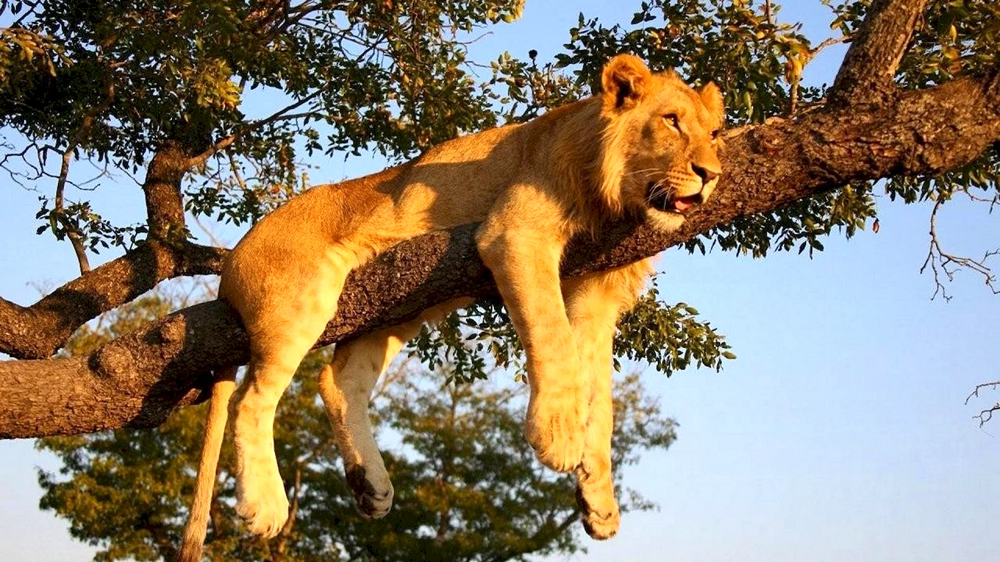

Лев

Лев (лат. Panthera leo) — вид хищных млекопитающих, один из пяти представителей рода пантер (Panthera), относящегося к подсемейству больших кошек в составе семейства кошачьих. Наряду с тигром — самая крупная из ныне живущих кошек, масса некоторых самцов может достигать 250 кг. Трудно сказать достоверно, массивнее ли крупнейшие подвиды льва, чем крупнейшие подвиды тигров. Связано это с тем, что известные очень большие массы амурских тигров в большинстве своём признаны недостаточно достоверными. Достаточными данными о размерах и массе представителей крупнейших подвидов льва (например, берберийском) наука не располагает. Что касается живущих в неволе животных, они часто являют собой смешение разных подвидов. Существует мнение, что львы в неволе несколько превышают тигров в размерах и массе, так же как и обратное ему.
Исторический ареал льва был значительно шире современного: ещё в Раннем Средневековье лев встречался на всей территории Африки, кроме пустынь и тропических лесов, также его можно было увидеть на Ближнем Востоке, Иране и даже в ряде мест южной Европы (к примеру, он обитал на части территории современного юга России, поднимаясь примерно до 45-й северной параллели). В Северной и Северо-Западной Индии лев был обычным хищником. Однако преследование со стороны человека и разрушение среды обитания привели к тому, что в Африке лев сохранился только к югу от Сахары, его ареал в настоящее время сильно сократился. В Азии небольшая популяция существует в Гирском лесу (в индийском штате Гуджарат).
Внешний вид льва очень своеобразен. Это один из немногих хищников с ярко выраженным половым диморфизмом. Самцы не только значительно крупнее самок, но и обладают гривой, которая у некоторых подвидов достигает большого развития и покрывает плечи, часть спины и грудь. Окраска льва жёлто-серая с различными оттенками, грива часто того же цвета, что и шкура, но бывает тёмная, даже чёрная. Подвиды льва определяются в значительной степени по цвету гривы. За исключением гривы, шерсть на теле зверя короткая, лишь на конце хвоста есть кисточка длинных волос.
Лев — рекордсмен по высоте в плечах среди всех кошачьих. По весу крупнейшие подвиды льва и тигра примерно сопоставимы. У львов мощные ноги, сильные челюсти, а клыки имеют длину 8 см, поэтому эти хищники способны убивать достаточно крупных животных. Череп льва очень похож на тигриный, лобная область, как правило, более пониженная и плоская. Носовые отверстия шире, чем у тигров. Тем не менее, у этих двух видов форма черепа очень похожа, различия имеются лишь в строении нижней челюсти. Окрас варьирует от цвета кожи буйвола до желтоватого, красноватого или тёмно-коричневого. Нижняя часть тела льва светлее, чем верхняя, кончик хвоста имеет чёрный цвет. Львята рождаются с коричневыми пятнами на теле, как у леопардов. При достижении половой зрелости эти пятна исчезают, хотя у некоторых взрослых особей, особенно у самок, они сохраняются на животе и ногах.
Львы — одни из немногих наземных хищников и единственные представители семейства кошачьих, у которых хорошо выражен половой диморфизм: львицы выделяются меньшими размерами и отсутствием гривы. Самки чаще выступают в роли охотника — по этой причине грива, которая может помешать при маскировке, у них не развита. Цвет гривы варьирует от белого до чёрного, а с возрастом всегда темнеет.
